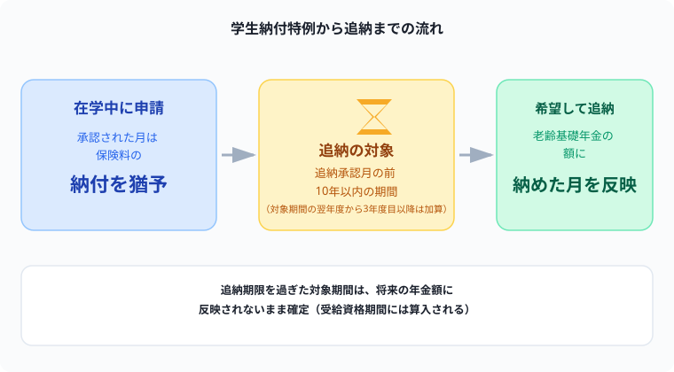

大学生の国民年金「学生納付特例制度」とは？追納すべきかも解説【2026年版】
20歳で国民年金の案内が届いたら、在学中の申請と、承認された期間の保険料を後から納める手続きを分けて考えましょう。卒業した年が同じでも、何年度の保険料を追納するかで加算額の有無が変わります。
結論：学生納付特例制度は「免除」ではなく「猶予」
学生納付特例は、本人が申請し、承認された期間の国民年金保険料の納付を猶予する制度です。承認された期間は老齢基礎年金を受けるために必要な期間に含まれます。後から保険料を納める追納は任意で、追納した月の分が将来の老齢基礎年金額に反映されます。
学生納付特例制度の対象者・条件
対象は、国民年金の第1号被保険者で、大学・短期大学・高等学校・専修学校など対象校に在学する学生です。ただし、誰でも無条件で使えるわけではなく、所得基準があります。
申請方法
- 市区町村の国民年金担当窓口
- 年金事務所
- 在学中の学校（学生課等で受付している場合）
必要書類は在学証明書または学生証の写し、基礎年金番号がわかるもの（年金手帳・基礎年金番号通知書等）またはマイナンバーカードです。マイナポータル経由での電子申請にも対応しています。申請は年度ごとです。過去分は保険料の納付期限から2年を経過していない月（申請時点から原則2年1カ月前まで）が対象です。月ごとの期限は日本年金機構の申請可能期間の表で確認できます。申請が遅れると、申請前の事故や病気について障害基礎年金を受けられない場合があります。

猶予期間中の扱い（3つのポイント）
老齢基礎年金を受け取るには原則10年以上の納付済期間等が必要ですが、学生納付特例を受けた期間はこの10年にカウントされます。ほかの納付済期間等と合算して、受給に必要な期間を満たすかを確認します。
ここが最重要ポイントです。追納しない限り、猶予を受けた期間は将来もらえる老齢基礎年金の「金額」には反映されません。受給資格はあっても、金額はその分少なくなります。
追納制度の仕組み
学生納付特例で猶予された保険料は、追納の承認がされた月の前10年以内の対象期間であれば、さかのぼって納付（追納）できます。
2026年度に追納すると、どの年度分に加算される？
在学中に2023年度分と2024年度分の学生納付特例が承認された人が、2026年度に追納を希望したとします。両方とも同じ年度に納める場合の自作例です。
2つの年度の答えと数え方を見る
| 承認の対象 | 2026年度は何年度目？ | 加算額 |
|---|---|---|
| 2023年度分 | 2024年度から数えて3年度目 | あり |
| 2024年度分 | 2025年度から数えて2年度目 | なし |
同じ人が同じ日に納めても、1年早い2023年度分だけが加算の対象です。ほかの年度分を確かめるときも、まず対象年度の翌年度を書き出します。
出典：日本年金機構「学生納付特例制度」、日本年金機構「学生期間中の保険料の追納」、日本年金機構「国民年金保険料の追納制度」令和8年度の追納額表（2026年11月20日確認）
追納すべきかどうかの判断基準
追納するかを考えるときは、次の順に手元の記録を見てみましょう。
学生納付特例の承認通知にある年月を確認します。対象月ごとに、追納の承認月から見た10年の範囲に入るかが変わります。期限が近いときは年金事務所で対象月と手続きを確認できます。
追納を希望する年度の保険料額表で、自分の対象年度の行を探します。複数年度にまたがるときは、各年度の金額と月数を別々に確認します。
追納した月は老齢基礎年金の額にも反映されます。追納しない月も、承認済みであれば受給資格期間には含まれます。対象額を家計と照らし合わせて判断できます。
まとめ
- 学生納付特例は申請・承認を受けた期間の納付を猶予する。追納は任意
- 所得基準の審査対象は学生本人のみ。親の所得は関係ない
- 猶予期間は受給資格期間には算入されるが、追納しないと年金額には反映されない
- 追納対象は追納承認月の前10年以内の期間。加算額は学生納付特例の対象期間の翌年度から3年度目以降に発生する
- 障害・遺族基礎年金では承認期間を納付要件に数える。実際の受給は各年金の要件による
⚔ 制度を正しく理解して、次は資格の勉強も一歩ずつ
お金の制度と同じで、資格の勉強も「知らずに損する」ことが一番もったいないです。Study Questなら毎日の勉強時間を記録しながら、コツコツ積み上げをゲーム感覚で継続できます。完全無料。
無料で始める →この記事で整理した内容から、次の学習で確認することを1つ選び、記録に残してみてください。